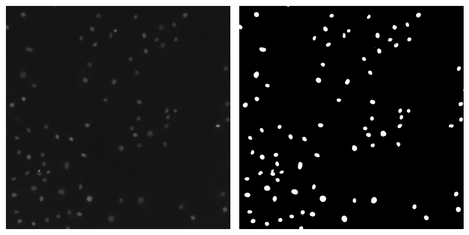
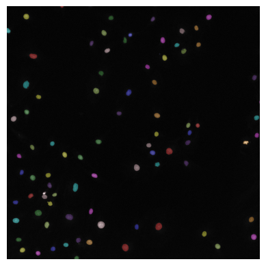
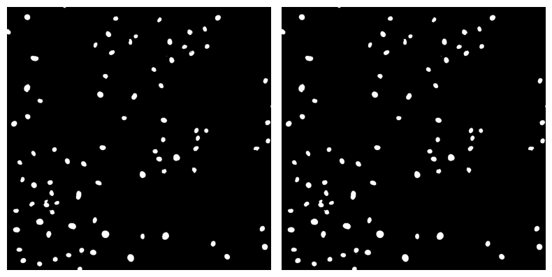
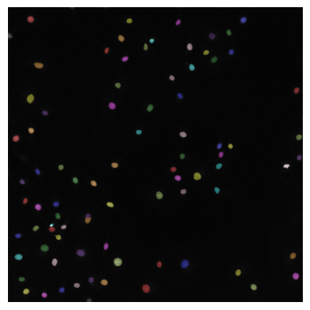
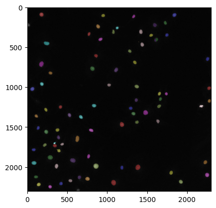

Classical Segmentation#
# /// script
# requires-python = ">=3.12"
# dependencies = [
# "matplotlib",
# "ndv[jupyter,vispy]",
# "numpy",
# "scikit-image",
# "scipy",
# "tifffile",
# ]
# ///
Overview#
This notebook covers the following steps in building a classic segmentation pipeline:
Step |
Concept |
Why it matters |
|---|---|---|
0 |
Setup |
Import dependencies |
1 |
Loading an Image |
Open tif image and display it |
2 |
Filtering |
Learn how to filter images to improve thresholding results |
3 |
Thresholding |
Learn how to use thresholding to generate a binary mask |
4 |
Labeling |
Learn how to label binary masks |
5 |
Mask Refinement |
Learn how to use apply mathematical operations to refine binary masks |
6 |
Processing Many Images |
Learn how to apply processing steps to many images |
Each chapter has:
Summary – review core concepts from lecture.
✍️ Exercise – your turn to write code!
In this exercise, we will use the DAPI dataset containing images of DAPI-stained nuclei.
0. Setup#
Concept#
We are going to be using existing Python libraries in this lesson, so we need to specify them at the beginning of our code. This is called specifying our dependencies. It’s standard practice to specify all dependencies at the very beginning of your code.
For learning purposes, we will import everything here step by step, as it is introduced in the following sections.
✍️ Exercise: Specify dependencies and run the code block for each section#
# specify dependencies
import matplotlib.pyplot as plt
import ndv
import numpy as np
import tifffile
from scipy.ndimage import distance_transform_edt
from skimage.color import label2rgb
from skimage.feature import peak_local_max
from skimage.filters import gaussian, threshold_otsu
from skimage.measure import label
from skimage.morphology import binary_closing, disk, remove_small_objects
from skimage.segmentation import watershed
1. Loading an Image#
Concept#
To work with an image in Python, we need to specify where the image file is so that we can read, or load, it. Once the image file is read, we can view it and process it.
Specifying your file’s path#
Once you have found your file’s path, you should assign it to a variable to make it easy to work with. Here’s an example:
file_path = '/Users/edelase/Desktop/projects/bobiac/lectures/classic_segmentation/img.tif'
Caution: Be wary of spaces in folder names, as they sometimes cause terminal to add \ or / to file directories where they should not be. It is best practice to always use _ in folder names whenever you would have wanted to have a space.
Note: Specifying file paths is a common task outside of image segmentation with Python, so some of you may have experience with this already. Note the terminology though. An individual file's location is a path. A folder's path containing an individual or multiple files is called a directory.
✍️ Exercise: Specify your image file’s path and assign it to the variable image_path#
image_path = "../../../_static/images/classic_seg/DAPI_wf_0.tif"
Loading an image#
There are many different ways to read image files in Python. In this lesson, we will use the Python library tifffile, to read .tif image files. We will need to import tifffile in Setup. We should also import numpy to take advantage of accessing np.array tools you have learned about in the previous lesson.
Name |
Description |
How to import it |
Documentation Link |
|---|---|---|---|
|
Reads and stores tiff files as np.arrays |
|
|
|
Scientific computing package that contains np.arrays |
|
In order to read an image with tifffile, we will need to import it, and then provide it with the image’s path. We will also import numpy too, although it is not necessary for tifffile to load the image.
import tifffile # put in Setup
import numpy as np # put in Setup
raw_image = tifffile.imread(image_path)
tifffile.imread() will use that image_path you inputted to find your file and read it. It will then return the read file. Since we will be wanting to work with this file, we assign it to the variable raw_image for easy reference.
✍️ Exercise: Use tifffile to read the image and assign it to the variable raw_image. Then, print its shape and dtype#
Remember to add your imports to Setup!
raw_image = tifffile.imread(image_path)
print(raw_image.shape, raw_image.dtype)
(2304, 2304) float32
Note: When we print this image's dtype, we see that it is uint32, or 32 bit. This is because the images we will be working with in this lesson did not come straight from the microscope. Before providing them to you, we applied some background correction steps including flat-field correction and background subtraction. You will learn about background subtraction in a future lesson.
Viewing the image#
In Python, reading the image and viewing it are two separate actions. Now that we have read the image and assigned it to the variable raw_image, we can view it using ndv, which we will need to import in Setup.
Name |
Description |
How to import it |
Documentation Link |
|---|---|---|---|
|
Multi-dimensional image viewer |
|
We can use ndv to view raw_image as follows:
import ndv # put in Setup
ndv.imshow(raw_image)
ndv.imshow() will use that raw_image you inputted to display your image. It will then return the image displayed in the ndv viewer.
✍️ Exercise: Use ndv to view the image raw_image#
Remember, we need to import ndv in Setup!
ndv.imshow(raw_image)

2. Filtering#
Concept#
Filters change image pixel values using a mathematical operation. Here, we use them to smooth and reduce noise from images. Doing so can help improve thresholding results.
Applying a filter to an image#
Here’s a summary of the filters we covered in lecture that are good at reducing noise from images:
Filter Name |
Description |
How to import it |
Documentation Link |
|---|---|---|---|
mean filter |
For a given kernel size, sums values in a list and and then divides by the total number of values |
|
|
Gaussian blur filter |
For a given kernel size, multiply each value by a Gaussian profile weighting, then divide by the total number of values |
|
|
median filter |
For a given kernel size, take the middle number in a sorted list of numbers |
|
Don’t forget to review the documentation to see how to specify the kernel size for each filter!
✍️ Exercise: Write code to apply a Gaussian blur filter to raw_image and assign it to the variable filtered_image#
Remember - we need to import the gaussian function from skimage.filters in Setup!
filtered_image = gaussian(raw_image, sigma=1)
✍️ Exercise: View filtered_image with ndv#
ndv.imshow(filtered_image)
3. Thresholding#
Concept#
Thresholding is when we select a range of digital values, or intensity values, in the image. These selected values are how we define regions of the image we are interested in.
Defining a threshold#
We need to define a minimum intensity cutoff which separates the background (what we don’t care about) from the foreground (what we do care about). We can manually pick an intensity value as this cutoff value like below:
threshold = 50
However, manually changing the value assigned to threshold until we find an optimal intensity cutoff value is tedious and may vary between images in a dataset. Therefore, it is best practice to instead use established thresholding algorithms to automatically define an intensity cutoff value. skimage.filters contains many different types of thresholding algorithms, but from that we will be using the Otsu thresholding algorithm threshold_otsu.
Thresholding Algorithm |
Description |
How to import it |
Documentation Link |
|---|---|---|---|
Otsu thresholding |
Returns threshold using Otsu’s method |
|
Note: skimage.filters also has a try_all_threshold() function that takes an inputted image and returns a figure comparing the outputs of different thresholding methods. It can be a helpful tool to pick a good thresholding algorithm!
We can use threshold_otsu from skimage.filters as follows:
from skimage.filters import threshold_otsu # put in Setup
threshold = threshold_otsu(filtered_image)
Here, threshold_otsu() will use that inputted filtered_image to calculate an intensity cutoff value. It will return the cutoff value assigned to the variable threshold.
✍️ Exercise: Write code to calculate a threshold on filtered_image using Otsu’s method#
Remember - we need to import the threshold_otsu function from skimage.filters in Setup!
threshold = threshold_otsu(filtered_image)
Generating a binary mask#
We now want to use this cutoff value to generate a binary mask, which is an image that has only 2 pixel values: one corresponding to the background and one corresponding to the foreground. By generating the binary mask, we will be able to evaluate whether this threshold is a sufficient cutoff value.
We can generate the binary mask by using any comparison operator. Since we want to accept values above a given threshold as foreground, let’s use the comparison operator >:
binary_mask = filtered_image > threshold
Python will interpret this line of code by going pixel by pixel through filtered_image and assigning True values where a pixel is greater than threshold and assigning False values where a pixel is equal or less than threshold. The output will be the binary mask image, filled with True and False. Since this binary mask is something we will be working with, we should assign it a variable, such as binary_mask.
✍️ Exercise: Write code to threshold filtered_image and generate a binary image assigned to the variable binary_mask. Print this image’s minimum and maximum values.#
binary_mask = filtered_image > threshold
print(np.max(binary_mask)) # binary_mask max value
print(np.min(binary_mask)) # binary_mask min value
True
False
Comparing the binary mask to the raw image#
We can use matplotlib.pyplot to view the raw_image and binary_mask side by side. We first need to import matplotlib.pyplot in Setup, which can be abbreviated as plt for simplicity.
Name |
Description |
How to import it |
Documentation Link |
|---|---|---|---|
|
Creates interactive plots |
|
Just as you learned in the last lesson, we can use plt to plot images. Plotting 2 images for side by side comparison is a very useful task, so let’s package this code into a function. You can get started with the template below:
import matplotlib.pyplot as plt # put in Setup
def double_image_plotter(img_1, img_2):
# Create a figure and axis
fig, axes = plt.subplots(1, 2, figsize=(8, 6)) # 1 row, 2 columns
# Plot images
# add code here!
plt.tight_layout() # Adjust layout
# Show the plot
plt.show()
We can then call this double_image_plotter function whenever we want to plot 2 images side by side! We can do that by writing:
double_image_plotter(image_1, image_2)
✍️ Exercise: Write a function named double_image_plotter that uses plt to plot two images side by side#
Remember to import matplotlib.pyplot as plt in Setup!
def double_image_plotter(img_1: np.ndarray, img_2: np.ndarray) -> None:
"""Function that plots 2 images side by side with their variable names as titles
Parameters
----------
img_1: np.ndarray
left plotted image
img_2: np.ndarray
right plotted image
Return
----------
None: plot of the images
"""
# Create a figure and axis
fig, axes = plt.subplots(1, 2, figsize=(8, 6)) # 1 row, 2 columns
# Plot images
axes[0].imshow(img_1, cmap="gray", vmin=img_1.min(), vmax=img_1.max())
axes[0].axis("off") # Turn off axis
axes[1].imshow(img_2, cmap="gray", vmin=img_2.min(), vmax=img_2.max())
axes[1].axis("off") # Turn off axis
plt.tight_layout() # Adjust layout
# Show the plot
plt.show()
✍️ Exercise: View raw_image and binary_mask side by side using the double_image_plotter function you just made#
double_image_plotter(raw_image, binary_mask)

4. Mask Labeling#
Concept#
Now that we have a binary mask that has white, or value True, pixels that match the image foreground and black, or value False, pixels that match the image background, we can continue further to distinguish individual objects within this mask. Labeling a mask is when we identify individual objects within a binary mask and assign them a unique numerical identifier.
Labeling a binary mask#
From skimage.measure we can use label() to label a curated binary mask.
Function |
Description |
How to import it |
Documentation Link |
|---|---|---|---|
|
Label connected regions of an image for Instance segmentation |
|
Here’s how we use label from skimage.measure to label a binary mask:
from skimage.measure import label # put in Setup
labeled_image = label(binary_mask)
Here, label() will take the inputted binary_mask and count each connected object in the image. It will then assign each object a whole number starting from 1. It will then return an image where each object’s pixels have the value of its object’s assigned number, which we assign to the variable labeled_image!
✍️ Exercise: Write code to label binary_mask and assign it to the variable labeled_image#
Remember - we need to import the label function from skimage.measure in Setup!
labeled_image = label(binary_mask)
Displaying a labeled mask on top of the image#
Let’s now summarize our final segmentation result in 1 image by viewing the labeled_image overlaid onto the original raw_image. From skimage.color, we can use label2rgb to do this.
Function |
Description |
How to import it |
Documentation Link |
|---|---|---|---|
|
Returns an RGB image where color-coded labels are painted over the image |
|
Here’s how we can use label2rgb from skimage.color to summarize our segmentation result:
from skimage.color import label2rgb # put in Setup
seg_summary = label2rgb(labeled_image, image = raw_image)
Here, label2rgb() is filled with 2 arguments:
The labeled mask
labeled_imageThe original image we want the
labeled_imageoverlaid onto, specified asimage = raw_image
The output will be an rgb image of the labeled mask overlaid onto the raw image, which is assigned to the variable seg_summary.
✍️ Exercise: Write code that creates an image of labeled_image overlaid onto raw_image and assign it to the variable seg_summary#
Remember - we need to import the label2rgb function from skimage.color in Setup!
seg_summary = label2rgb(labeled_image, image=raw_image)
/home/runner/work/bobiac-book/bobiac-book/.venv/lib/python3.12/site-packages/skimage/color/colorlabel.py:149: UserWarning: Negative intensities in `image` are not supported
rgb = _label2rgb_overlay(
✍️ Exercise: View seg_summary with plt.imshow()#
plt.imshow(seg_summary)
plt.axis("off") # Turn off axis
plt.show()
Clipping input data to the valid range for imshow with RGB data ([0..1] for floats or [0..255] for integers). Got range [-0.08745135366916656..1.4824706792831421].

How does the segmentation result look? Are all labels corresponding to individual nuclei? If not, additional processing steps are needed to refine binary_mask.
5. Mask Refinement#
Concept#
Mask refinement is needed when a binary mask still does not accurately match the image foreground after filtering and thresholding. In the context of our nuclei example image, we need to apply additional processing steps to remove objects that are too small to be nuclei, fill any holes within nuclei, and separate touching nuclei.
Common mask refinement steps#
There are many different ways we can refine a binary mask. The table below summarizes the refinement steps we discussed in lecture:
Function Name |
Description |
How to import it |
Documentation Link |
|---|---|---|---|
|
Removes objects smaller than the specified size from the foreground. |
|
|
|
Performs morphological closing, a mathematical operation that results in small hole removal |
|
|
|
Performs the Watershed transform, a useful algorithm for separating touching objects. The output is a labeled image. |
|
Let’s now walk through steps to remove objects smaller than nuclei with remove_small_objects(), fill in any holes within nuclei with binary_closing(), and then separate touching nuclei with watershed().
Removing objects smaller than nuclei#
In many cases, thresholding will be unsuccessful at rejecting image objects that are debris, as these tend to have high intensity values. However, we can use differences in object size to reject anything that is too small to be a nucleus.
From skimage.morphology we can use the remove_small_objects function to remove any connected objects of a specified min_size. Here is how we can do that:
from skimage.morphology import remove_small_objects # put in Setup
binary_mask_sized = remove_small_objects(binary_mask, min_size=10)
Here, remove_small_objects() will take the inputted binary_mask and set any connected object that is smaller than min_size=10 to have False values (in other words, be rejected as foreground). It will then return the updated binary mask, which we assigned to the variable binary_mask_sized.
✍️ Exercise: Write code to remove objects smaller than nuclei in binary_mask and assign it to the variable binary_mask_sized#
Remember, we need to import functions we want to use in Setup!
binary_mask_sized = remove_small_objects(binary_mask, min_size=10)
/tmp/ipykernel_3194/2564569088.py:1: FutureWarning: Parameter `min_size` is deprecated since version 0.26.0 and will be removed in 2.0.0 (or later). To avoid this warning, please use the parameter `max_size` instead. For more details, see the documentation of `remove_small_objects`. Note that the new threshold removes objects smaller than **or equal to** its value, while the previous parameter only removed smaller ones.
binary_mask_sized = remove_small_objects(binary_mask, min_size=10)
✍️ Exercise: Use our double_image_plotter function to display binary_mask and binary_masked_sized side by side#
double_image_plotter(binary_mask, binary_mask_sized)
Filling holes within nuclei#
While filtering helps reduce the effect of noise on thresholding, sometimes there will still be areas within an object that are below the minimum threshold value. These areas will show up as holes within a connected object. We can fill these holes by applying a morphological closing operation to the mask.
From skimage.morphology we can use the binary_closing function to fill small holes within nuclei. Here is how we can do that:
from skimage.morphology import binary_closing # put in Setup
from skimage.morphology import disk # put in Setup
binary_mask_filled = binary_closing(binary_mask_sized, disk(1))
Here, binary_closing() has two inputs:
The binary mask
binary_mask_sizedA footprint
disk(1), which is a disk shaped kernel of size 1
It uses these inputs to perform a morphological closing operation optimized for binary images. It will then return the updated binary mask, which we assign to the variable binary_mask_filled.
✍️ Exercise: Write code to fill holes within nuclei in binary_mask_sized, and assign the updated mask to the variable binary_masked_filled#
Remember, we need to import functions we want to use in Setup!
binary_mask_filled = binary_closing(binary_mask_sized, disk(5))
/tmp/ipykernel_3194/3986192061.py:1: FutureWarning: `binary_closing` is deprecated since version 0.26 and will be removed in version 0.28. Use `skimage.morphology.closing` instead.
binary_mask_filled = binary_closing(binary_mask_sized, disk(5))
✍️ Exercise: Use our double_image_plotter function to display binary_mask_sized and binary_mask_filled#
double_image_plotter(binary_mask_sized, binary_mask_filled)

Separating touching nuclei#
Let’s now apply the Watershed transform to our binary_mask to separate any touching nuclei. From skimage.segmentation, we can use watershed() to do this.
The watershed() function needs the following inputs:
The inverse of the distance transform of the binary mask
The seeds: labeled image of the peaks of the distance transform
The binary mask
We are going to need a few additional functions to provide the first two inputs to the watershed() function.
Function |
Description |
How to import it |
Documentation Link |
|---|---|---|---|
|
Calculates the distance transform of the input |
|
|
|
Remove objects smaller than the specified size from the foreground. |
|
Computing the distance transform#
We can use the distance_transform_edt() function from scipy.ndimage to get the distance transform of our refined binary_mask binary_mask_filled:
from scipy.ndimage import distance_transform_edt # put in Setup
# compute the distance transform
distance_transform = distance_transform_edt(binary_mask_filled)
✍️ Exercise: Write code to calculate the distance transform of binary_mask_filled and assign it to the variable distance_transform#
Remember to import what you need in Setup!
# compute the distance transform
distance_transform = distance_transform_edt(binary_mask_filled)
Creating seeds for Watershed#
Once we have the distance transform of binary_mask_filled, we can use the peak_local_max() function from skimage.feature to get its local maxima. However, we want to make sure that we get only 1 local maximum per object. We therefore can apply a footprint input confine a region the peak_local_max function will look for local maxima. Doing so will constrain how many maxima the function returns. We can also specify a min_distance separating peaks, which will also help constrain the number of maxima to be 1 per nucleus.
Here’s how we would write the code:
from skimage.feature import peak_local_max # put in Setup
# find local maxima coordinates in the distance transform
local_maxima_coords = peak_local_max(distance_transform, footprint=np.ones((25, 25)), min_distance=10)
✍️ Exercise: Write code that finds the local maxima coordinates of distance_transform. Print the coordinates to see how they are organized.#
Remember to import what you need in Setup!
# find local maxima coordinates in the distance transform
local_maxima_coords = peak_local_max(
distance_transform, footprint=np.ones((25, 25)), min_distance=10
)
print(local_maxima_coords)
[[1992 859]
[2195 1078]
[2007 1383]
[1321 1478]
[1882 286]
[1920 571]
[ 772 814]
[ 713 175]
[1472 1183]
[2102 2249]
[ 95 177]
[2150 753]
[1561 235]
[1027 61]
[1952 82]
[ 100 1840]
[2186 1919]
[ 995 1368]
[1639 626]
[1650 626]
[ 457 246]
[ 965 182]
[2221 141]
[1941 2228]
[1990 364]
[ 311 1420]
[ 474 1438]
[1235 832]
[1335 1330]
[ 243 884]
[ 789 1110]
[1016 2274]
[ 226 1594]
[2250 284]
[1351 526]
[1375 668]
[2131 651]
[2074 1799]
[1734 341]
[2210 421]
[1540 374]
[ 412 1608]
[ 350 1746]
[1165 1362]
[1252 413]
[ 610 860]
[1267 1294]
[1542 797]
[ 693 1344]
[1799 394]
[ 404 914]
[ 649 2255]
[2174 539]
[ 106 950]
[1174 2277]
[1868 766]
[1083 1653]
[1633 388]
[1241 1648]
[1364 110]
[ 977 1020]
[1428 1633]
[ 552 1281]
[1087 1738]
[ 826 287]
[1150 1665]
[1787 83]
[2007 1182]
[2125 104]
[ 353 1549]
[1725 218]
[1442 1370]
[1283 230]
[ 198 1725]
[ 262 1124]
[1514 136]
[ 336 771]
[1717 437]
[ 316 1076]
[1241 2179]
[ 115 1333]
[1707 339]
[ 435 1391]
[2165 655]]
Now that we have the local maxima, we need to organize them for the watershed() function as a labeled image. We can do that by creating a binary image that’s the same size as our binary mask. We will want all values in this new image to be False except where the local maxima are. Therefore, let’s use np.zeros_like() to create a binary image filled with False values that’s the same size as binary_mask:
#create image that's the same size and dtype as binary_mask_filled
local_maxima_image = np.zeros_like(binary_mask_filled, dtype=bool)
✍️ Exercise: Write code that creates an image of dtype=bool that is the same size as binary_mask. Assign it to the variable local_maxima_image.#
# create image that's the same size and dtype as binary_mask_filled
local_maxima_image = np.zeros_like(binary_mask_filled, dtype=bool)
Now we need to add the local_maxima_coords to this new local_maxima_image. This is a tricky task, because local_maxima_coords organizes each (x,y) coordinate of where a local maximum is like this:
[[10, 20], # first peak at (row=10, col=20)
[30, 40], # second peak at (row=30, col=40)
[50, 60]] # third peak at (row=50, col=60)
We need a way to organize these coordinates so that we can insert all of the row and columns as separate arrays into local_maxima_coords. In other words, we need to organize the coordinates so they look like this:
[[10, 30, 50], # all row indices
[20, 40, 60]] # all column indices
We can do that by taking the transpose of local_maxima_coords. A transpose flips a matrix over its diagonal axis, effectively swapping rows and columns. In Python, we take the transpose of an np.array by writing:
local_maxima_coords.T
Here, the “.T” indicates that we want the transpose of local_maxima_coords.
✍️ Exercise: Write code that takes the transpose of local_maxima_coords, then print the result.#
print(local_maxima_coords.T)
[[1992 2195 2007 1321 1882 1920 772 713 1472 2102 95 2150 1561 1027
1952 100 2186 995 1639 1650 457 965 2221 1941 1990 311 474 1235
1335 243 789 1016 226 2250 1351 1375 2131 2074 1734 2210 1540 412
350 1165 1252 610 1267 1542 693 1799 404 649 2174 106 1174 1868
1083 1633 1241 1364 977 1428 552 1087 826 1150 1787 2007 2125 353
1725 1442 1283 198 262 1514 336 1717 316 1241 115 1707 435 2165]
[ 859 1078 1383 1478 286 571 814 175 1183 2249 177 753 235 61
82 1840 1919 1368 626 626 246 182 141 2228 364 1420 1438 832
1330 884 1110 2274 1594 284 526 668 651 1799 341 421 374 1608
1746 1362 413 860 1294 797 1344 394 914 2255 539 950 2277 766
1653 388 1648 110 1020 1633 1281 1738 287 1665 83 1182 104 1549
218 1370 230 1725 1124 136 771 437 1076 2179 1333 339 1391 655]]
We still have some work to do to get these coordinates into local_maxima_image. To pass the coordinates into local_maxima_image, we need to organize them as a tuple. We can do that with the tuple() function:
tuple(local_maxima_coords.T)
Now, the coordinates will be arranged as so:
array([10, 30, 50]), # all row indices
array([20, 40, 60]) # all column indices
✍️ Exercise: Write code that converts the transpose of local_maxima_coords to a tuple. Print the result.#
print(tuple(local_maxima_coords.T))
(array([1992, 2195, 2007, 1321, 1882, 1920, 772, 713, 1472, 2102, 95,
2150, 1561, 1027, 1952, 100, 2186, 995, 1639, 1650, 457, 965,
2221, 1941, 1990, 311, 474, 1235, 1335, 243, 789, 1016, 226,
2250, 1351, 1375, 2131, 2074, 1734, 2210, 1540, 412, 350, 1165,
1252, 610, 1267, 1542, 693, 1799, 404, 649, 2174, 106, 1174,
1868, 1083, 1633, 1241, 1364, 977, 1428, 552, 1087, 826, 1150,
1787, 2007, 2125, 353, 1725, 1442, 1283, 198, 262, 1514, 336,
1717, 316, 1241, 115, 1707, 435, 2165]), array([ 859, 1078, 1383, 1478, 286, 571, 814, 175, 1183, 2249, 177,
753, 235, 61, 82, 1840, 1919, 1368, 626, 626, 246, 182,
141, 2228, 364, 1420, 1438, 832, 1330, 884, 1110, 2274, 1594,
284, 526, 668, 651, 1799, 341, 421, 374, 1608, 1746, 1362,
413, 860, 1294, 797, 1344, 394, 914, 2255, 539, 950, 2277,
766, 1653, 388, 1648, 110, 1020, 1633, 1281, 1738, 287, 1665,
83, 1182, 104, 1549, 218, 1370, 230, 1725, 1124, 136, 771,
437, 1076, 2179, 1333, 339, 1391, 655]))
This is exactly what we want them to look like to insert into local_maxima_image! Here’s how we can insert them:
local_maxima_image[tuple(local_maxima_coords.T)]
The last thing we need to do is make them all have value True, since local_maxima_image is a binary image. We can do that by writing:
# add the local_maxima_coords to the created local_maxima_image, after doing some work to organize them
local_maxima_image[tuple(local_maxima_coords.T)] = True
✍️ Exercise: Write code that adds the local_maxima_coords to local_maxima_image.#
# add the local_maxima_coords to the created local_maxima image
local_maxima_image[tuple(local_maxima_coords.T)] = True
Finally, we can label local_maxima_image to create seeds for the Watershed function.
# label the local_maxima_image to create seeds for the watershed function
seeds = label(local_maxima_image)
Hooray! We have our seeds! Let’s now put all of what we just learned together about how we used distance_transform to create seeds.
✍️ Exercise: Write code that uses distance_transform to create seeds for the Watershed algorithm. Assign the seeds to the variable seeds.#
# find local maxima coordinates in the distance transform
local_maxima_coords = peak_local_max(
distance_transform, footprint=np.ones((25, 25)), min_distance=10
)
# create image that's the same size and dtype as binary_mask_filled
local_maxima_image = np.zeros_like(binary_mask_filled, dtype=bool)
# add the local_maxima_coords to the created local_maxima image
local_maxima_image[tuple(local_maxima_coords.T)] = True
# label the local_maxima image to create seeds for the watershed function
seeds = label(local_maxima_image)
Applying the Watershed Transform#
Now we have everything we need to input into the watershed() function:
The inverse of the distance transform of the binary mask:
-distance_transformThe seeds:
seedsThe binary mask:
binary_mask_filled
We can now call the Watershed function as follows:
# apply the watershed algorithm to segment the image and get labels
from skimage.segmentation import watershed # put in Setup
labeled_ws_image = watershed(-distance_transform, seeds, mask=binary_mask_filled)
Here, watershed() will apply the Watershed Transform to the inputted binary_image_filled. It will return the transformed, labeled image. We assign it to the variable labeled_ws_image.
✍️ Exercise: Write code to apply a watershed transform to binary_mask_filled and assign it to the variable labeled_ws_image#
Remember to import what you need in Setup!
# apply the watershed algorithm to segment the image and get labels
labeled_ws_image = watershed(-distance_transform, seeds, mask=binary_mask_filled)
✍️ Exercise: Use label2rgb() to create an image of labeled_ws_image overlaid onto raw_image and assign it to the variable seg_summary_refined#
seg_summary_refined = label2rgb(labeled_ws_image, image=raw_image, bg_label=0)
/home/runner/work/bobiac-book/bobiac-book/.venv/lib/python3.12/site-packages/skimage/color/colorlabel.py:149: UserWarning: Negative intensities in `image` are not supported
rgb = _label2rgb_overlay(
✍️ Exercise: Use plt to display seg_summary_refined#
plt.imshow(seg_summary_refined)
plt.axis("off") # Turn off axis
plt.show()
Clipping input data to the valid range for imshow with RGB data ([0..1] for floats or [0..255] for integers). Got range [-0.08745135366916656..1.4824706792831421].

END OF FIRST LAB SECTION - STOP HERE FOR LAST LECTURE COMPONENT!#
6. Processing Many Images#
Concept#
Statistically relevant & reproducible measurements come from analyzing many fluorescence images. Therefore, we need to adapt our code to efficiently run on many images, not just 1 at a time! We can do so by implementing a for loop to our image path handling. We can also add the ability to save output files using tifffile.imwrite().
Consolidate code for image processing steps#
The first step to processing many images is to write code to process a single image, just as we have done above in the previous sections.
✍️ Exercise: Copy and paste all of the code we wrote in the above sections to load and segment our single nucleus image#
Remember, we want code that does the following steps:
Specify dependencies
Load the image
Filter the image with a Gaussian filter
Threshold to generate a binary mask
Refine the mask: Remove small objects
Refine the mask: Fill small holes
Refine the mask: Watershed
Review our final segmentation summary with label2rgb
# specify dependencies
import matplotlib.pyplot as plt
import ndv
import numpy as np
import tifffile
from scipy.ndimage import distance_transform_edt
from skimage.color import label2rgb
from skimage.feature import peak_local_max
from skimage.filters import gaussian, threshold_otsu
from skimage.measure import label
from skimage.morphology import binary_closing, remove_small_objects
from skimage.segmentation import watershed
# load the image
image_path = "../../../_static/images/classic_seg/DAPI_wf_0.tif"
raw_image = tifffile.imread(image_path)
# filter the image with gaussian filter
filtered_image = gaussian(raw_image, sigma=1)
# threshold filtered_image to generate binary mask
binary_mask = filtered_image > threshold_otsu(filtered_image)
# Remove small objects
binary_mask_sized = remove_small_objects(binary_mask, min_size=10)
# Fill small holes by performing morphological closing
binary_mask_filled = binary_closing(binary_mask_sized)
# apply watershed to separate nuclei and label mask
# compute the distance transform
distance_transform = distance_transform_edt(binary_mask_filled)
# find local maxima coordinates in the distance transform
local_maxima_coords = peak_local_max(
distance_transform, footprint=np.ones((25, 25)), min_distance=10
)
# create image that's the same size and dtype as binary_mask_filled
local_maxima_image = np.zeros_like(binary_mask_filled, dtype=bool)
# add the local_maxima_coords to the created local_maxima image
local_maxima_image[tuple(local_maxima_coords.T)] = True
# label the local_maxima image to create seeds for the watershed function
seeds = label(local_maxima_image)
# apply the watershed algorithm to segment the image and get labels
labeled_ws_image = watershed(-distance_transform, seeds, mask=binary_mask_filled)
# visualize the segmentation result
seg_summary_refined = label2rgb(labeled_ws_image, image=raw_image, bg_label=0)
plt.imshow(seg_summary_refined)
plt.show()
/tmp/ipykernel_3194/1851959794.py:25: FutureWarning: Parameter `min_size` is deprecated since version 0.26.0 and will be removed in 2.0.0 (or later). To avoid this warning, please use the parameter `max_size` instead. For more details, see the documentation of `remove_small_objects`. Note that the new threshold removes objects smaller than **or equal to** its value, while the previous parameter only removed smaller ones.
binary_mask_sized = remove_small_objects(binary_mask, min_size=10)
/tmp/ipykernel_3194/1851959794.py:28: FutureWarning: `binary_closing` is deprecated since version 0.26 and will be removed in version 0.28. Use `skimage.morphology.closing` instead.
binary_mask_filled = binary_closing(binary_mask_sized)
/home/runner/work/bobiac-book/bobiac-book/.venv/lib/python3.12/site-packages/skimage/color/colorlabel.py:149: UserWarning: Negative intensities in `image` are not supported
rgb = _label2rgb_overlay(
Clipping input data to the valid range for imshow with RGB data ([0..1] for floats or [0..255] for integers). Got range [-0.08745135366916656..1.4824706792831421].

Using a for loop to loop through image paths#
Now that we have the code in one place, we need to adapt it to be able to process more than one image. We can do that by looping through image file paths. From pathlib, we can use Path in conjunction with a for loop to iterate through many image file paths in a specified folder directory. Here’s how we would write the code to do that:
from pathlib import Path
folder_dir = Path("/Users/edelase/bobiac/") # update with your folder directory
for image_path in folder_dir.iterdir():
# do things
Providing the function Path with a folder directory points Python to the folder we want to access files from. We assign it to the variable folder_dir to make it easy to work with. Writing folder_dir.iterdir() points to this folder we want to work in, and hands us all file paths within the folder. Since we want to loop through each file path in the folder, we set up our for loop to take each image_path within what folder_dir.iterdir() provides from the folder. We can then do whatever tasks we would like for each image_path.
✍️ Exercise: Write a for loop that prints all image file paths in a folder using Path and iterdir()#
from pathlib import Path
folder_dir = Path("../../../_static/images/classic_seg/")
for image_path in folder_dir.iterdir():
print(image_path)
../../../_static/images/classic_seg/DAPI_wf_0.tif
../../../_static/images/classic_seg/seg_methods_classic.png
Using glob to loop through only tif image paths#
What if we have more than just tif images in our folder? Instead of using iterdir(), we can selectively loop through files ending with “.tif” using glob. Here’s how we would write the code to do that:
from pathlib import Path
folder_dir = Path("/Users/edelase/bobiac/")
for image_path in folder_dir.glob("*.tif"): # only loop through files ending in .tif
# do things
Here, we are still using Path to point Python to the folder we want to access files from. However, instead of using iterdir() to hand us all file paths within the folder, we are using glob to only hand us file paths in the folder ending with “.tif”. We are then looking through each of these file paths.
✍️ Exercise: Write a for loop that prints all tif image file paths in a folder using Path and glob#
from pathlib import Path
folder_dir = Path("../../../_static/images/classic_seg/")
for image_path in folder_dir.glob("*.tif"): # only loop through files ending in .tif
print(image_path)
../../../_static/images/classic_seg/DAPI_wf_0.tif
Using a for loop to process many images#
Now that we have learned how to loop through image paths efficiently, we can now apply this concept to increase the throughput of our classic segmentation processing code. We can do that by putting each processing step, starting with reading the image, within the for loop.
from pathlib import Path
folder_dir = Path("/Users/edelase/bobiac/")
for image_path in folder_dir.glob("*.tif"): # only loop through files ending in .tif
# load the image
raw_image = tifffile.imread(image_path)
...
break # Use for troubleshooting! Only do first loop until confident you're ready to loop through all files
Here, Python will loop through each image_path ending with “.tif” in folder_dir and conduct the indented lines of code. Until we’re ready to loop through all images and complete processing steps, we can use break as a last indented step in our for loop to only complete 1 loop.
✍️ Exercise: Improve your classic segmentation code above by adding a for loop to process many images#
from pathlib import Path
import ndv
import numpy as np
import tifffile
from scipy.ndimage import distance_transform_edt
from skimage.color import label2rgb
from skimage.feature import peak_local_max
from skimage.filters import gaussian, threshold_otsu
from skimage.measure import label
from skimage.morphology import binary_closing, remove_small_objects
from skimage.segmentation import watershed
folder_dir = Path("../../../_static/images/classic_seg/")
for image_path in folder_dir.glob("*.tif"): # only loop through files ending in .tif
# load the image
raw_image = tifffile.imread(image_path)
# filter the image with gaussian filter
filtered_image = gaussian(raw_image, sigma=1)
# threshold filtered_image to generate binary mask
binary_mask = filtered_image > threshold_otsu(filtered_image)
# Remove small objects
binary_mask_sized = remove_small_objects(binary_mask, min_size=10)
# Fill small holes by performing morphological closing
binary_mask_filled = binary_closing(binary_mask_sized)
# apply watershed to separate nuclei and label mask
# compute the distance transform
distance_transform = distance_transform_edt(binary_mask_filled)
# find local maxima coordinates in the distance transform
local_maxima_coords = peak_local_max(
distance_transform, footprint=np.ones((25, 25)), min_distance=10
)
# create image that's the same size and dtype as binary_mask_filled
local_maxima_image = np.zeros_like(binary_mask_filled, dtype=bool)
# add the local_maxima_coords to the created local_maxima image
local_maxima_image[tuple(local_maxima_coords.T)] = True
# label the local_maxima image to create seeds for the watershed function
seeds = label(local_maxima_image)
# apply the watershed algorithm to segment the image and get labels
labeled_ws_image = watershed(-distance_transform, seeds, mask=binary_mask_filled)
# visualize the segmentation result
seg_summary_refined = label2rgb(labeled_ws_image, image=raw_image, bg_label=0)
plt.imshow(seg_summary_refined)
plt.show()
break
Saving Output Files#
Now that we have our for loop set up, we can modify our code to save the labeled_ws_image as an outputted tif file. We can do this using tifffile.imwrite(). Here’s how we can write the code:
output_dir = Path("/Users/edelase/bobiac/results")
tifffile.imwrite(output_dir/"output_image.tif", labeled_ws_image.astype("uint32"))
Here, tifffile.imwrite is provided with 2 inputs:
output_dir/"output_image.tif"is the file path the image will be saved to, which ends with a specified file namelabeled_ws_image.astype("uint32")is a specification for the data being saved as “uint32”, or 32 bit
tifffile.imread() will use these two inputs to output a file saved to the output_dir folder.
NOTE: The dtype of a labeled image is important because it determines the maximum number of labels stored in the image. Since each object in a labeled image is assigned a unique integer label, the dtype determines the range of integers that can be used for this labeling (e.g. uint8 -> max 255 objects). By default, labels generated by the skimage.measure.label() function are of type uint32.
When we provide tifffile.imwrite() with an output file path, we run into a problem. We can’t just directly write, or hard code, a file name for the image we are trying to save because it will be different for each iteration of our for loop. Therefore, we need a way to automatically generate a file name for each loop. We can do this by accessing the stem of a given image_path, which would give us the starting file name without the .tif at the end:
image_path.stem # returns file name, without .tif at the end, from image_path
Let’s see this in action!
✍️ Exercise: Print the file name of each tif image in your folder using stem#
folder_dir = Path("../../../_static/images/classic_seg/")
for image_path in folder_dir.glob("*.tif"): # only loop through files ending in .tif
print(image_path.stem) # file name, without .tif at the end
DAPI_wf_0
However, we want to add a “.tif” at the end, as well as an additional label to the file name to distinguish it from the original raw_image. We can do the following to add a “_labeled.tif” at the end of the file name:
f"{image_path.stem}_labeled.tif"
Here, the f before the double quotes to start a str cues Python to know that this is a formatted string. Formatted strings are a way to insert variables into strings. In this case, we are inserting the file name that image_path.stem returns into the beginning of a string that ends with "_labeled.tif". Together, this will give us the full file name to save the image.
To make it a full file path, we can combine it with our output_dir:
output_filepath = output_dir/f"{image_path.stem}_labeled.tif"
Now, let’s apply these modifications to our image processing code:
input_dir = Path("/Users/edelase/bobiac/")
output_dir = Path("/Users/edelase/bobiac/results")
for image_path in input_dir.glob("*.tif"): # only loop through files ending in .tif
# do processing steps
# save file
output_filepath = output_dir/f"{image_path.stem}_labeled.tif"
tifffile.imwrite(output_filepath, labeled_ws_image.astype("uint32"))
Now, let’s apply these concepts to our segmentation code so that we can save each final labeled image as an outputted tif file.
✍️ Exercise: Modify your classic segmentation code that processes many images to save each labeled_ws_image#
from pathlib import Path
import numpy as np
import tifffile
from scipy.ndimage import distance_transform_edt
from skimage.feature import peak_local_max
from skimage.filters import gaussian, threshold_otsu
from skimage.measure import label
from skimage.morphology import binary_closing, remove_small_objects
from skimage.segmentation import watershed
input_dir = Path("../../../_static/images/classic_seg/")
output_dir = Path("../../../_static/images/classic_seg/")
for image_path in input_dir.glob("*.tif"): # only loop through files ending in .tif
# load the image
raw_image = tifffile.imread(image_path)
# filter the image with gaussian filter
filtered_image = gaussian(raw_image, sigma=1)
# threshold filtered_image to generate binary mask
binary_mask = filtered_image > threshold_otsu(filtered_image)
# Remove small objects
binary_mask_sized = remove_small_objects(binary_mask, min_size=10)
# Fill small holes by performing morphological closing
binary_mask_filled = binary_closing(binary_mask_sized)
# apply watershed to separate nuclei and label mask
# compute the distance transform
distance_transform = distance_transform_edt(binary_mask_filled)
# find local maxima coordinates in the distance transform
local_maxima_coords = peak_local_max(
distance_transform, footprint=np.ones((25, 25)), min_distance=10
)
# create image that's the same size and dtype as binary_mask_filled
local_maxima_image = np.zeros_like(binary_mask_filled, dtype=bool)
# add the local_maxima_coords to the created local_maxima image
local_maxima_image[tuple(local_maxima_coords.T)] = True
# label the local_maxima image to create seeds for the watershed function
seeds = label(local_maxima_image)
# apply the watershed algorithm to segment the image and get labels
labeled_ws_image = watershed(-distance_transform, seeds, mask=binary_mask_filled)
# visualize the segmentation result
seg_summary_refined = label2rgb(labeled_ws_image, image=raw_image, bg_label=0)
plt.imshow(seg_summary_refined)
plt.show()
# save labeled_ws_image
output_filename = output_dir / f"{image_path.stem}_labeled.tif"
tifffile.imwrite(output_filename, labeled_ws_image.astype("uint32"))
break
When you are happy with the code, simply remove the break statement to run the code on all images in the folder (maybe also remove the visualization step).